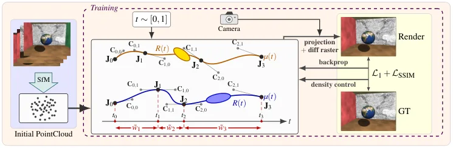
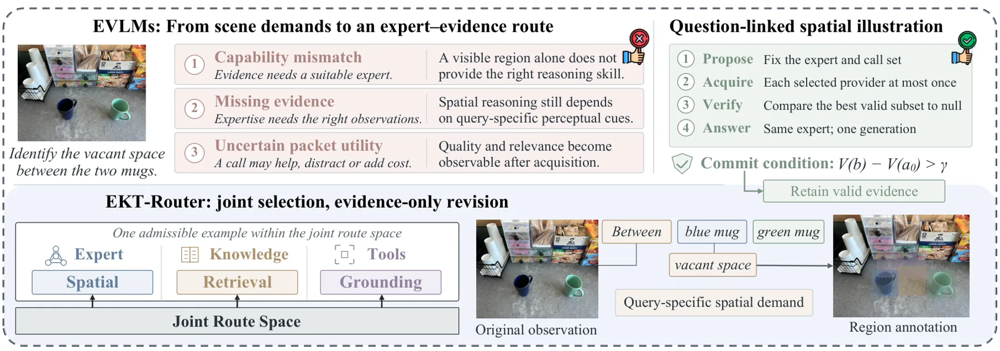
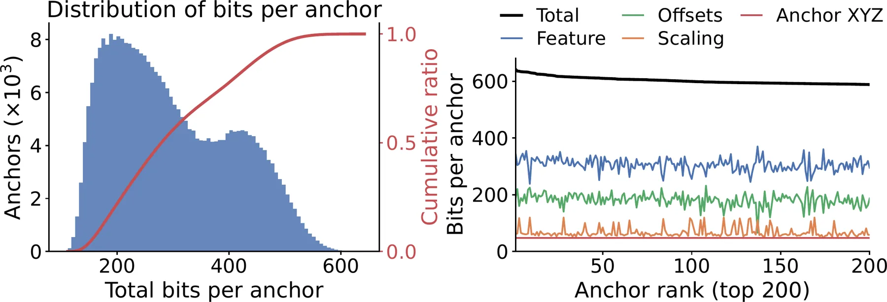
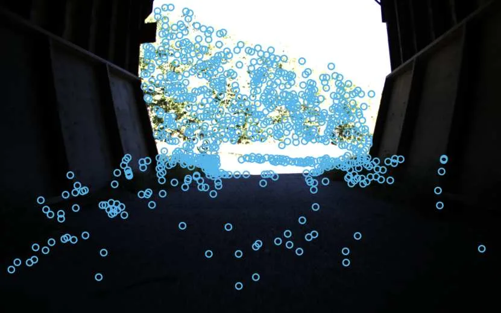

新论文 · 日期 2026-10-27 · score 19 · S层 · 3D/4D Spatial Perception · cs.GR, cs.CV
内容级别：完整单篇海报
作者：Tom Yachil, Andrei Sharf
评分 18/10
4D 高斯泼溅Bézier 样条非均匀时间参数化G1 连续动态场景重建运动表示
一句话工作总结：把 3DGS 的运动表示换成“每条高斯一段可学宽度的三次 Bézier 样条 + 反射式 G1 接缝”，不引入任何辅助网络；在同样段数下把时间容量分给真正动得快的区域，flames 场景 PSNR 比 STG 高 3.46 dB，但软接触高频碰撞场景仍输给 Gaussian-Flow（26.84 vs 31.10 dB）。
该文提出 GaussianSpline，用逐高斯的自适应、非均匀分段三次 Bézier 样条建模运动。与全局形变、定阶多项式或均匀参数化样条不同，它同时学习每条轨迹的 Bézier 控制点与时间分段，把时间分辨率集中到快速变化区域、让近静态区域保持紧凑轨迹。为兼顾整体平滑与局部自适应，作者用基于反射的控制点形式在相邻段之间施加 G1 连续约束，使轨迹完全可微又保留非均匀时间参数化的自由度。在 Neural 3D V…
We present GaussianSpline, a dynamic 4D Gaussian Splatting method that models per-Gaussian motion using adaptive, non-uniform piecewise cubic B\'ezier splines. Unlike approaches based on global deformations, f…

新论文 · 日期 2026-10-27 · score 9 · A层 · Robust State Estimation / Uncertainty · cs.RO, cs.SY, eess.SY
内容级别：半海报
作者：Zeyuan Feng, Baljeet Singh, Sarthak Ranjeet Kaingade, Somil Bansal, Bryan Trinh
评分 16/10
可达性分析运行时监控不确定性估计reach-avoidTD+MC人形机器人OOD
一句话工作总结：把“机器人还能不能救回来”写成一个有限时域 liveness 值函数，用 TD+MC 混合目标学它、用 reach-avoid 探索器主动去踩包络边界；G1 上验证集 F1 0.957、OOD 推挤集 0.918，闭环里把退化策略的跌倒率从 47.75% 压到 20.75%，提前 0.58 s 预警。
部署人形任务策略需要可靠的运行时监控器，在不可恢复跌倒发生前及时触发回退策略。该文把监控器合成表述为学习给定回退策略的随机、有限时域可恢复包络，并用双层框架交替进行值学习与主动探索：内层用 TD 与 Monte Carlo 混合目标估计有限时域 liveness 值并提供认知不确定性，外层把数据增广重写为 reach-avoid 问题，用不确定性引导的探索器主动寻找分布外状态、同时避开高置信不可恢复区域。对剩余高不…
Deploying humanoid task policies requires reliable runtime monitors that anticipate unrecoverable falls in time to trigger a fallback. We formulate this task as learning the stochastic, finite-horizon recovera…

新论文 · 日期 2026-10-27 · score 7 · A层 · Embodied Navigation / VLN / Spatial Reasoning · cs.CV
内容级别：半海报
作者：Weilin Ruan, Yingjie Xu, Yangkai Wei, Bohan Zhou, Shuaibo Li, Harold Haodong Chen, Kaiwen Zhou, Yinchuan Li, Ying-Cong Chen, James Cheng
评分 12/10
具身问答专家路由证据获取LoRA 专家后验校验空间推理
一句话工作总结：把“选哪个专家”和“给它什么证据”合成一个受限路由：三份 Qwen3-VL-8B LoRA 专家 + 三类工具，先按结果导出的能力签名与交互项打整条路径的分，再在拿到数据包后按“相对不用证据的增益”决定收不收；六基准均分 61.4，关掉全部外部证据后仅靠路由仍比最佳固定专家高 1.75 分。
具身视觉语言模型要在部分、演化的观测下回答问题，成败同时取决于选了哪种推理能力与它能拿到什么证据。专家路由器调整内部计算，工具增强系统获取外部证据，两者独立决策会让合适的专家拿不到所需证据。该文提出 EKT-Router，在一个有界框架内联合选择能力专家、可选知识与感知工具：用结果导出的签名刻画通用、空间推理、时空三类专家的重叠强项，用联合效用给完整的“专家—证据”路径打分，并在拿到数据包后由校验器按“相对空证据的…
Embodied vision-language models must answer questions from partial, evolving observations. Their success depends on both the reasoning capability selected and the evidence available to it. Expert routers adapt…
新论文 · 日期 2026-10-27 · score 8 · A-层 · Real-time / GPU Robotics Systems · cs.CV, cs.GR
内容级别：简报式摘要
作者：Briac Toussaint, Diego Thomas, Jean-S\'ebastien Franco, Edmond Boyer, Christian Theobalt
评分 7/10
Voronoi 剖分多视图重建SDFGPU 光栅化表面重建
一句话工作总结：把“Voronoi 胞元不规则、每次优化都要重建”的痛点，用自适应质心 Voronoi（尺寸由 SDF 调制）加 GPU 特化流水线解决；DTU/BlendedMVS 几何精度追平主流高斯表面方法，单卡 2.5 分钟收敛，Voronoi 构造比通用实现快 5–10 倍。
Voronoi 剖分近来成为多视图形状与外观重建的自适应空间离散化方案，但不规则胞元让优化过程中反复重建剖分的代价很高。该文改用自适应质心 Voronoi 剖分（CVT），在保持胞元接近质心、形状规则的前提下允许非均匀尺寸：胞元大小由演化中的符号距离场调制，让站点集中在零水平集附近。作者为整条流水线做了 GPU 特化，包括最近邻查询、近似 Voronoi 构造与面向小各向同性胞元的光栅化器，Voronoi 构造比通…
Voronoi tessellations have recently emerged as an adaptive, space-partitioning discretization for shape and appearance reconstruction from multi-view images. However, the irregular cells they produce make the…

新论文 · 日期 2026-10-27 · score 15 · B层 · Neural Rendering / 3DGS / NeRF · cs.CV, cs.GR
内容级别：简报式摘要
作者：Wenqing Wang, Huimin Zeng, Yun Fu
评分 13/10
3DGS 压缩锚点自回归熵模型率失真存储
一句话工作总结：把 3DGS 的锚点特征做哈希投影 + FiLM 调制 GRU 自回归熵模型，对量化残差自适应熵编码；相对原始 3DGS 压缩 150 倍、相对 Scaffold-GS 压缩 28 倍而渲染质量可比。
3D 高斯泼溅能快速高质量地新视角渲染，但参数量大，存储与传输成为瓶颈。该文提出紧凑的 3DGS 压缩框架 RacerGS：用哈希投影把锚点哈希编码投影成紧致上下文特征，用 FiLM 调制的自回归 GRU 上下文模型利用锚点特征组之间的因果依赖、以循环隐状态精化熵模型参数，并对量化后的锚点属性残差按上下文预测均值做自适应熵编码。相比原始 3DGS 压缩超过 150 倍、相比 Scaffold-GS 压缩 28 倍，…
3D Gaussian Splatting (3DGS) has emerged as a promising approach for fast, high-quality novel-view rendering. However, its large parameter size remains a bottleneck for storage and transmission. We propose Rac…

新论文 · 日期 2026-10-27 · score 11 · B-层 · Traditional LiDAR/Visual SLAM · cs.RO
内容级别：简报式摘要
作者：Olivier Gamache, Anthony Lavertu, David-Alexandre Duclos, Jean-Michel Fortin, Fran\c{c}ois Pomerleau, Philippe Gigu\`ere
评分 11/10
视觉 SLAM多曝光包围因子图光照鲁棒性隧道场景
一句话工作总结：不合成 HDR，直接把多曝光包围帧的原始像素写进因子图；配合自适应包围策略，在 32 m/s 隧道出口的光照突变下把状态估计误差降低 78%，常规场景不退化。
快速光照变化会在自动曝光（AE）跟上之前把图像打饱和，抹掉维持跟踪所需的视觉对应，从而干扰视觉 SLAM。该文在两个层面缓解：B-Adapt 采集自适应曝光包围以覆盖场景动态范围并保持光度重叠，BVSLAM 直接把多曝光序列作为因子图状态估计的约束，而不依赖 HDR 合成。作者在常规环境与以 32 m/s 车速重复通过的隧道出口场景中与 SOTA 对比：隧道内 B-Adapt + BVSLAM 相比 AE 图像把状…
Rapid illumination transitions can disturb Visual SLAM (VSLAM) by saturating images before the Automatic Exposure (AE) policy adapts, removing the visual correspondences needed to maintain tracking. Our propos…